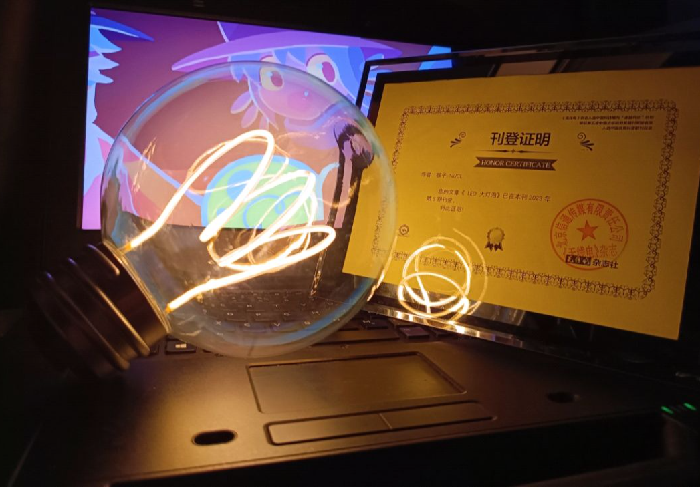
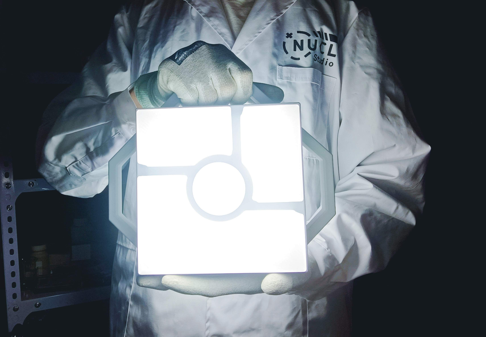
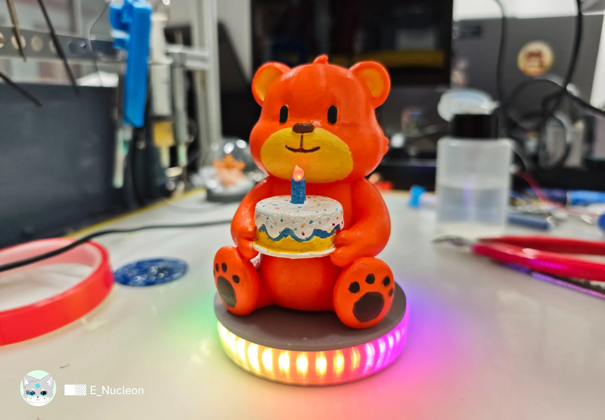
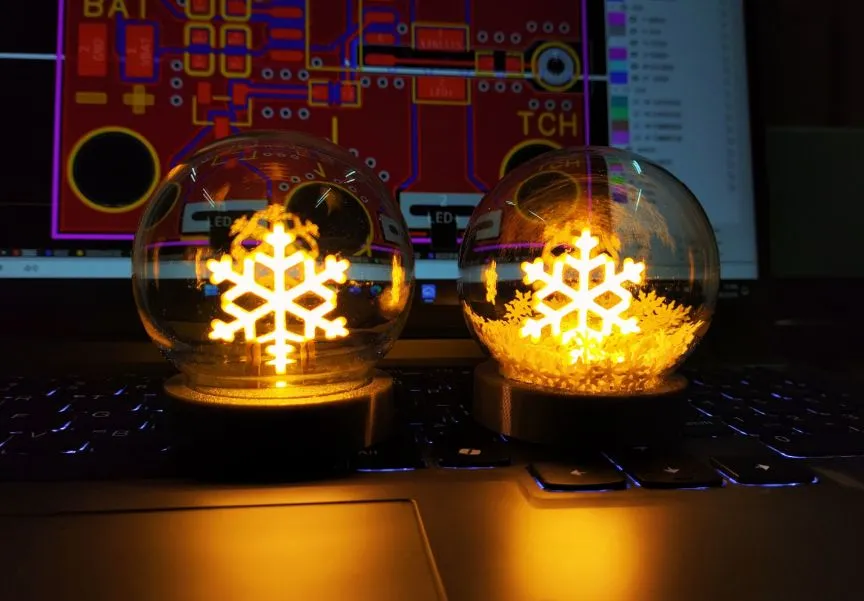
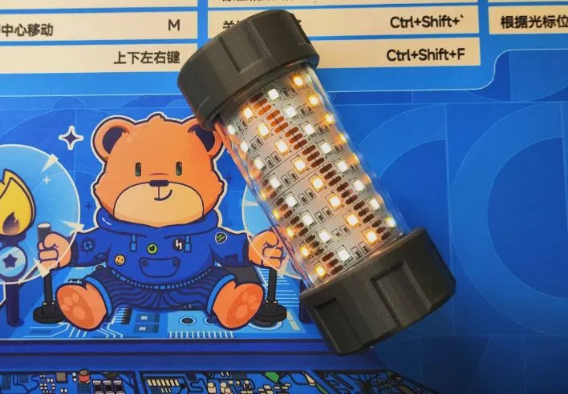

PROJECTS
项目&作品
这里展示我的各类项目和作品，涵盖硬件设计、嵌入式开发、3D 建模等多个领域。

LED大灯泡
一款复刻游戏《OneShot》的大灯泡。（核子早期入门作品hhh）

手提式信标灯
复刻游戏《OUTER WILDS》中的一款信标灯

嘉立创小熊摆件
嘉立创六周年纪念小熊。附带RGB氛围灯、呼吸灯生日蜡烛、且支持生日歌烧录和触摸播放......

雪花氛围灯
一款自带电池的雪花氛围灯，可充电和触摸调光。

便携式双色温露营灯
一款带磁吸功能、防水可触摸调光与切换色温的便携式双色温露营灯。

CH340K 串口调试模块
一款基于 CH340K 芯片的串口调试模块，用于连接电脑和微控制器。
NEWS
最新动态
站点与工具的最新进展。
个人网站全面重构：全新深色视觉与模块化结构，后续将持续扩展
EE 开发工具箱扩充至 38 个工具，覆盖电源、射频、元器件等方向
完成网站搭建，不支持中英文切换与站内搜索
ABOUT
关于我

核子（Nucleon），物联网（IoT）专业。野生全能型工程师。拥有 8 年电子电路实践与 3 年产品落地经验。
SOCIAL
社交与媒体
您可以通过以下社交平台关注我，获取最新动态和作品分享：
Bilibili
视频创作与分享平台
OSHWHub
开源硬件项目分享
GitHub
代码仓库与开源项目

QQ 群
技术交流与讨论
X
社交与生活分享平台
邮箱
联系我们或发送邮件